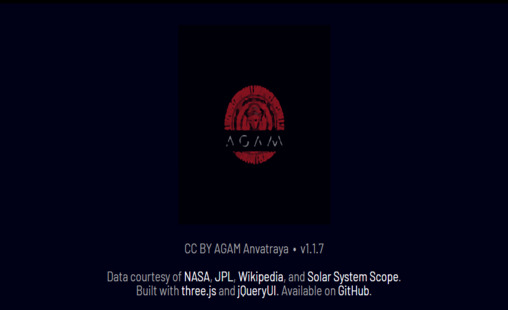
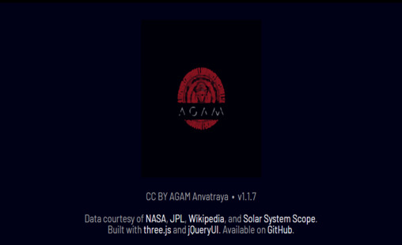
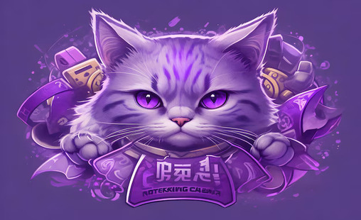

Here are some of the projects I've developed and showcased at various events, receiving recognition for creativity and technical execution. Each project reflects my passion for problem-solving and innovation, pushing the boundaries of what's possible with technology. Explore my work below to see how I bring ideas to life through code!
 

Agam is an interactive orrery web app designed to visualize near-Earth objects using live astronomical data. The project brings the cosmos to life by showcasing detailed, real-time information about celestial bodies. Built using cutting-edge technologies like Three.js and jQuery, Agam pushes the boundaries of web development, offering users an engaging, data-driven exploration of our solar system.

Emotify is an AI-powered emotion recognition system designed to analyze audio files and classify emotions based on speech patterns. Using a deep learning model built with TensorFlow, the system processes Mel-frequency cepstral coefficients (MFCCs) extracted from audio to detect different emotional states. The model, trained on a variety of emotional speech data, can accurately predict emotions from new audio inputs.

Purr-fessor is an AI-powered teaching assistant chatbot with a feline personality, designed to make learning fun and engaging. Offering academic support, study tips, and encouragement, Purr-fessor uses a playful cat-inspired charm to assist students. Developed using Vercel and APIs, this project combines advanced technology with a unique approach to education, providing personalized assistance in an interactive and lighthearted manner.
Signalize is a project that simulates a traffic light signaling system using Embedded C. It replicates real-world traffic light operations by controlling light sequences, ensuring vehicles move safely at intersections. This project is perfect for learning microcontroller programming, timing functions, and the fundamentals of Embedded C. Developed by integrating hardware control with software logic.